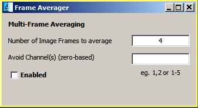
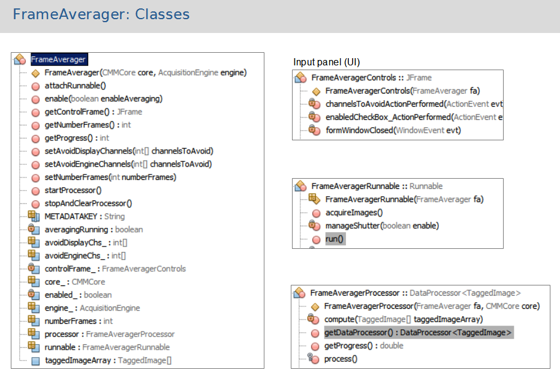
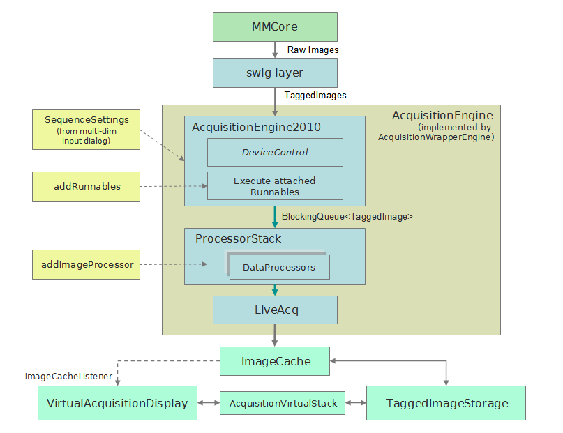

by Amitabh Verma & Grant Harris
Marine Biological Laboratory, 2012
FrameAverager is a MicroManager plugin that provides multiple
exposure/frame averaging during acquisition. We offer this
both as a plugin that is useful in its own right, and as an
example/demonstration of using attachedRunnables and DataProcessors
as part of the acquisition process.
Using the Plugin
Start it from the plugins menu.

Set the number of frames to average (N) and click the enabled
checkbox.
Channels to avoid can be specified so that they are not multi-frame
averaged.
How it works
For each hardware setting (channel), multiple exposures/frames are
acquired and an image containing the averaged image is ‘produced’
into the DataProcessor chain. This is achieved this by
utilizing 2 extension points in the AcquisitionEngine which allow
you to add functionality to the image processing chain: Attached
Runnables and DataProcessors.
The FrameAverager class
instantiates the runnable and the DataProcessor, manages enabling
and disabling, and maintains a shared array of TaggedImages.
Attached Runnable
An instance of a Runnable class can be attached to the AcqEngine by
calling attachRunnable(t, p, s, c, runnable), where t, p, s, c
specify the timepoints, positions, slices and channels for which it
will be invoked. (Passing a value of -1 results in the
runnable being attached at all values of that index.) It is
invoked after the
hardware/devices have been set to the states required for the
current setting and before an
image is acquired/snapped by the AcqEngine.
FrameAverageRunnable extends
java.lang.Runnable and is attached to the AcquisitionEngine.
When FrameAveragerRunnable is invoked, it pauses the AcqEngine,
acquires (N-1) exposures/frames (N is the number of frames to
average) and puts them in the shared array of TaggedImages. It
then releases/un-pauses the AcqEngine.
At this point, the AcqEngine acquires the image (as usual) and
pushes it into the image queue/pipeline
(DefaultTaggedImagePipeline) The DataProcessor
(FrameAverageProcessor) then receives this image and continues the
process.
DataProcessor
A DataProcessor<TaggedImage> can be added to the image
processing chain using
AcquisitionEngine.addImageProcessor(). The inputs and
outputs of the DataProcessors are connected together in the
ProcessorStack. The output of the ProcessorStack is input to
the LiveAcq which put the image into the ImageCache where its is
saved. The display is notified and updated to show the last
image.
The FrameAverageProcessor extends
DataProcessor<TaggedImage>. An instance is added to
the processing pipeline with a call to addImageProcessor().
FrameAverageProcessor receives the image from the image pipeline
which it uses as the the Nth frame. This image is added to
the shared TaggedImages array and the average for each pixel
is computed. The resulting image is then produced
(i.e. passed to the next DataProcessor in the ProcessorStack).

[ TODO Add section on using as an API...
The LC-PolScope Pol-Acquisition plugin uses FrameAverager directly.
]
The MicroManager Image Acquisition, Processing and Display
Pipeline

See also, Multi-Dimensional Acquisition
Programming,